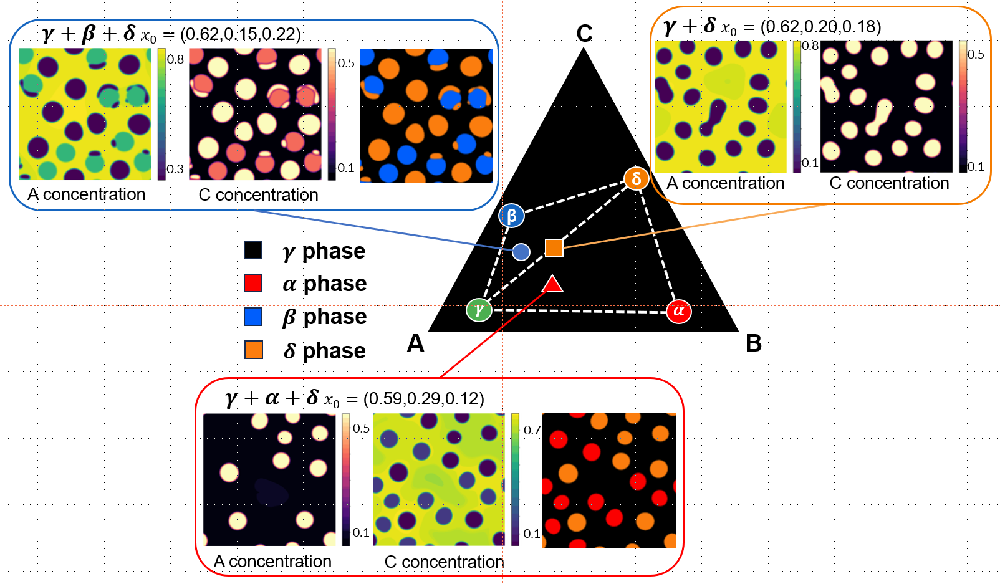
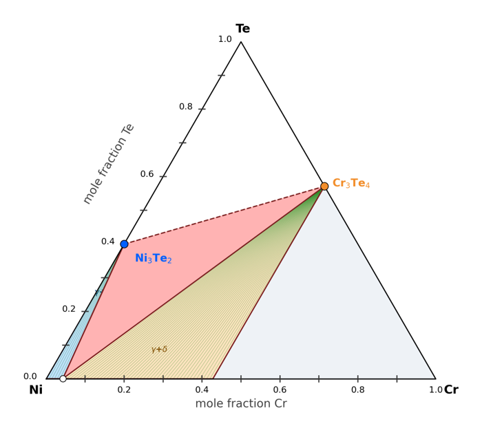
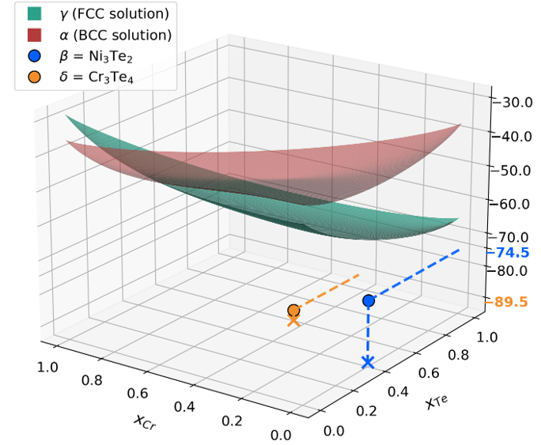
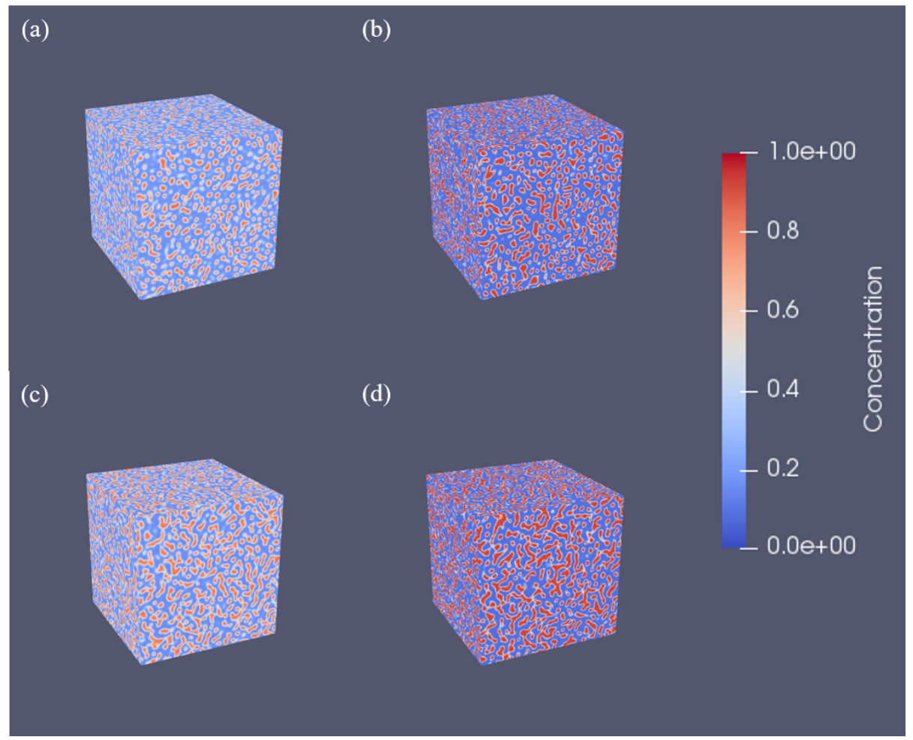
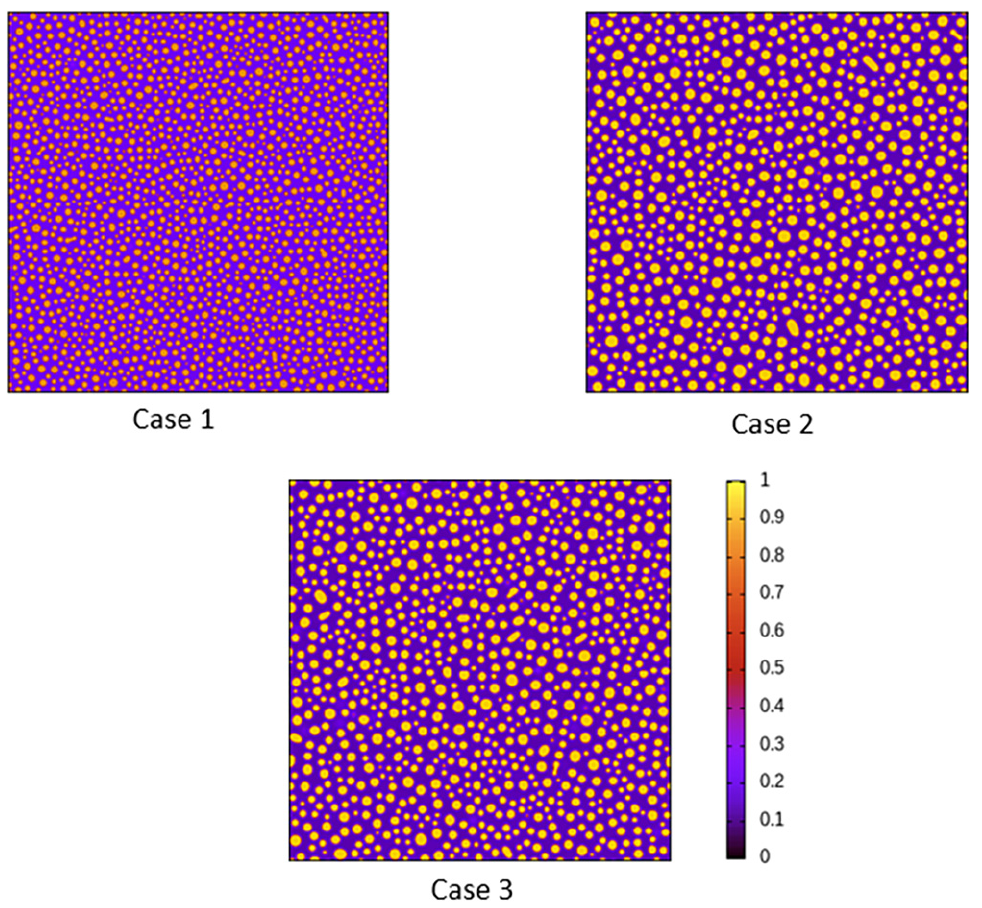
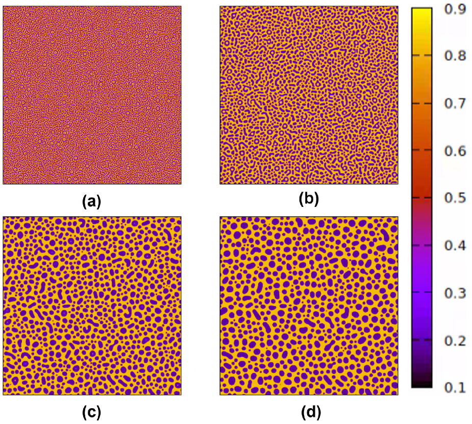
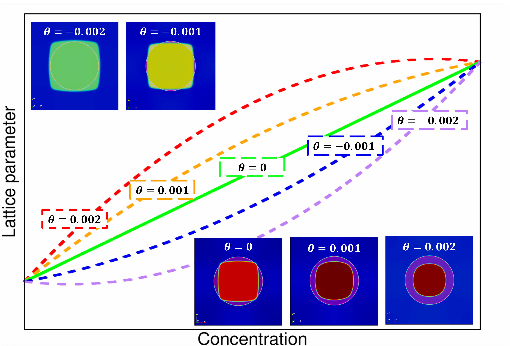
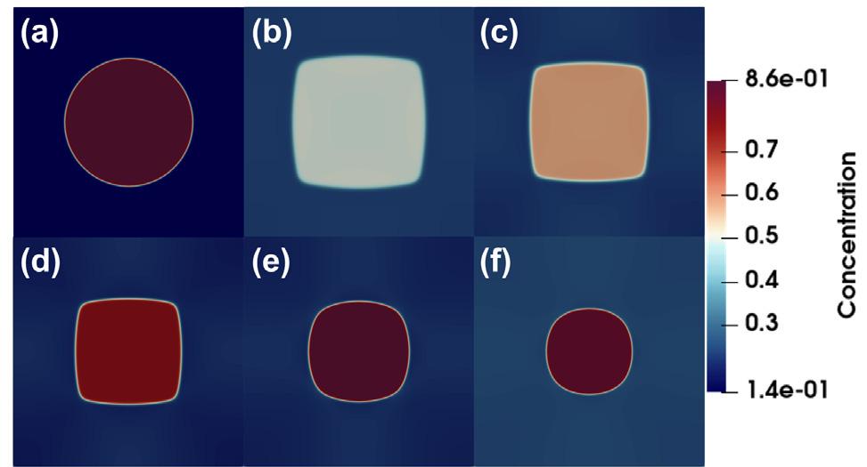
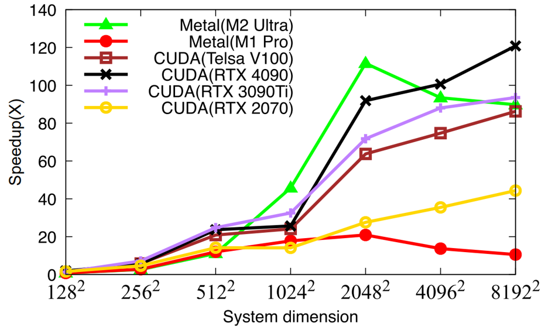

Research &
software development
Selected work in phase-field model development, nuclear materials simulation and GPU performance benchmarking.
01 / Model development
Manuscript in preparation
Reaction-extent
Reaction-extent
phase-field model
- Research problem
- Describing solution phases and stoichiometric compounds in ternary multiphase systems.
- Development focus
- A reaction-extent phase-field formulation with solution-phase composition relaxation.
Related manuscript
Reaction Extent Phase-Field Model with Solution Phase Composition Relaxation for Ternary Stoichiometric Multiphase Systems


02 / Nuclear materials
Manuscript in preparation
Te penetration and telluride formation in Ni–Cr–Te
- Research problem
- How does tellurium penetrate Ni–Cr alloys and form stoichiometric tellurides in materials for molten salt reactors?
- Development focus
- GPU-accelerated phase-field simulations track Te penetration and telluride formation. CALPHAD calculations describe the phase equilibria and free energies.
Related manuscript
GPU‑Accelerated Phase‑Field Simulation of Stoichiometric Telluride Formation in Ni–Cr–Te Systems for Molten Salt Reactor Structural Materials
CALPHAD ternary composition diagram


CALPHAD free-energy surfaces


03 / Alloy microstructuresPublished studiesPhase separation
Phase separation
in Fe-based alloys
- Research problem
- The influence of magnetic ordering and Al concentration on phase separation and microstructural evolution.
- Methods
- Phase-field simulation of Fe–Cr and Fe–Cr–Al systems, including GPU-accelerated computation.


Magnetic ordering in Fe–Cr


Phase separation in Fe–55 at.% Cr


04 / Thermodynamics & elasticityPublished · 2025Nonlinear lattice
Nonlinear lattice
parameter effects
- Research problem
- The role of a nonlinear lattice parameter–concentration relationship in alloy microstructural evolution.
- Methods
- Computational investigation of lattice parameter effects using the MOOSE framework.


Equilibrium inclusion shapes · Fig. 4


05 / Computational methods
Published · 2024
GPU acceleration for
GPU acceleration for
phase-field simulations
- Research question
- How does grid size affect the speedup of a Cahn–Hilliard solver on different GPUs?
- Benchmark
- A semi-implicit Fourier spectral solver was tested on two Apple GPUs using Metal and four NVIDIA GPUs using CUDA. The two-dimensional grids ranged from 128 × 128 to 8192 × 8192.


Publications
Complete publication details and available papers.